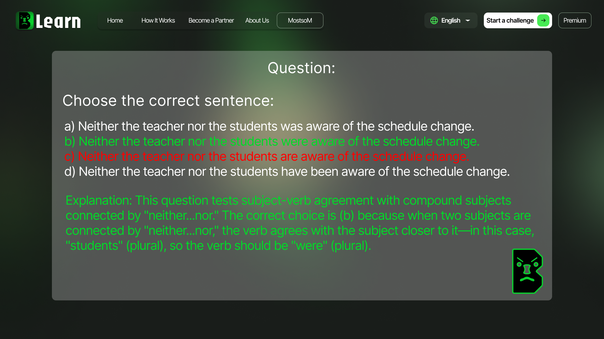

 Instant Feedback and Personalized Learning Another unique aspect of Brutal Learn is its focus on feedback. In traditional learning environments, feedback can sometimes be delayed or sparse, making it hard for students to understand their mistakes in real time. However, with Brutal Learn, immediate feedback is integrated into every activity. As soon as you answer a question, the system provides feedback, explaining what you did right and what you could improve. This helps learners stay on track, build confidence, and address their weak points quickly.
Interactive Learning with Continuous Practice One of the standout features of Brutal Learn is its focus on continuous practice. Learning a new language can be daunting, especially when you don’t have enough opportunities to practice or receive feedback. With Brutal Learn, that is no longer an issue. The site offers a wide range of interactive exercises designed to build English skills through consistent practice. From grammar drills to vocabulary tests, reading comprehension tasks, and listening activities, you’ll never run out of ways to hone your skills.

Additionally, the site offers tools for creating custom quizzes and tests, making it easier for teachers to generate assessments that are perfectly tailored to their curriculum. Teachers can create multiple-choice questions, fill-in-the-blank exercises, and even interactive listening or reading comprehension tasks. This feature not only saves teachers time, but it also provides them with instant feedback on how their students are performing on these assessments, which is invaluable for refining future lessons.